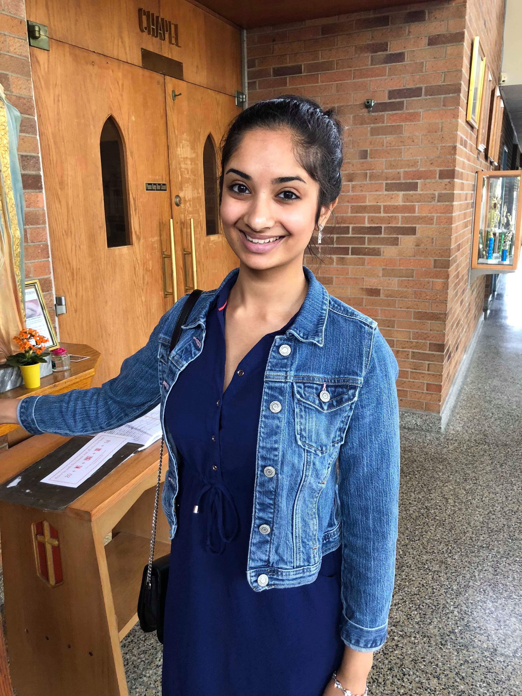

Introduction to Digital Design and Integrated Circuits
Lectures, Labs, Office Hours
| Lectures | Tue, Thu | 12:30 pm - 2:00 pm | Cory 540AB | Sophia Shao |
| Discussion | Fri | 12:00 pm - 1:00 pm | Cory 540AB | Yikuan Chen |
| Fri | 4:00 pm - 5:00 pm | Cory 540AB | Dima Nikiforov | |
| ASIC Lab | Fri | 8:00 am - 11:00 am | Cory 111/117 | Dima Nikiforov |
| FPGA Labs | Wed | 5:00 pm - 8:00 pm | Cory 111/117 | Alisha Menon |
| Thu | 2:00 pm - 5:00 pm | Cory 111/117 | Yikuan Chen | |
| Mon | 2:00 pm - 5:00 pm | Cory 111/117 | Seah Kim | |
| Office Hours | Mon | 5:00pm - 6:00pm | Cory 111/117 | Seah Kim |
| Tue | 2:00pm - 3:00pm | Cory 570 | Sophia Shao | |
| Wed | 4:00pm - 5:00pm | Cory 111/117 | Alisha Menon | |
| Thu | 10:00am - 11:00am | Cory 111/117 | Yikuan Chen | |
| Fri | 3:00pm - 4:00pm | Cory 111/117 | Dima Nikiforov |
Homework
- Ask questions on our Piazza forum.
- Homeworks will be posted as links in the outline below. Please submit completed homework via Gradescope. See Piazza for the entry code.
- Homework will be released on Thursdays before midnight, and will be due next Friday 8 days later. Homework will be challenging and graded for correctness.
Exams
Course Outline
| Week | Date | Lecture Topic | Recording | Optional reading | Discussion | ASIC Lab | FPGA Lab | Homework | Homework Solution |
|---|---|---|---|---|---|---|---|---|---|
| 1 | 1/18 | Class Organization & Introduction to Course Content slides | recording | No Reading | No Discussion | Lab 1 | Lab 1 | No homework! | |
| 1/20 | Design Abstraction slides | recording | No Reading | ||||||
| 2 | 1/25 | Metrics & Verilog I slides | recording | RCN: 1.3, H&H:4.1-4.2 | Lab 2 | Lab 2 | Homework 1 | Homework 1 Solution | |
| 1/27 | Verilog II slides | recording | H&H:4.3-4.5 | (Discussion 1 blank slides) (annotated slides) recording | |||||
| 3 | 2/1 | Combinational Logic I slides | recording | H&H:2.1-2.4 | Lab 3 | Lab 3 | Homework 2 | ||
| 2/3 | Combinational Logic II + FSM slides | recording | H&H:2.7,3.1,3.4 | (Discussion 2 blank slides) (annotated slides) recording | |||||
| 4 | 2/8 | FSM II + RISC-V Intro slides | recording | P&H:2.1-2.4 | Lab 4 | Lab 4 | |||
| 2/10 | RISC-V Datapath I slides | recording | P&H:2.7-2.10 | (Discussion 3 blank slides) (annotated slides) recording | Homework 3 | ||||
| 5 | 2/10 | RISC-V Datapath II slides | recording | H&H:6.4,7.3 | |||||
| 2/17 | RISC-V Pipelining slides | H&H:7.5 |
Resources
Textbooks
- Recommended Digital Design and Computer Architecture, RISC-V ed, David Money Harris & Sarah L. Harris (H & H)
- Recommended Digital Integrated Circuits: A Design Perspective, 2nd ed, Jan M. Rabaey, Anantha Chandrakasan, Borivoje Nikolić (RCN)
- Useful Computer Organization and Design RISC-V Edition, David Patterson and John Hennessy (P&H)
- Useful CMOS VLSI Design, Neil Weste, David Harris (W&H)
Verilog
- Verilog Primer Slides
- wire vs reg, from the CS150 Spring 2009 class.
- always@ blocks, from the CS150 Fall 2009 class.
- FSMs in Verilog
- Ready-Valid Interfaces
Protocols & Standards
CS61C videos
- RISC-V Assembly 1 2 3 4 5 6 7 8 9 10 11 12 13 14
- RISC-V (RV32I) Instruction Formats 1 2 3 4 5 6 7 8 9
- CPU Design 1 2 3 4 5 6 7 8 9 10 11 12 13 14 15 16 17
- Pipeline 1 2 3 4 5 6 7 8 9 10 11
- Caches 1.1 1.2 1.3 1.4 2.1 2.2 2.3 3.1 3.2 3.3 4.1 4.2 4.3 4.4
Staff
 |
Sophia Shao | ysshao at berkeley dot edu |
|  | Alisha Menon | allymenon at berkeley dot edu |
| Dima Nikiforov | vnikiforov at berkeley dot edu | |
| Seah Kim | seah at berkeley dot edu | |
| Yikuan Chen | chenyikuan110 at berkeley dot edu | |
| Anthony Han | yikun.anthony.han at berkeley dot edu |
Grading
Class
| Problem Sets | 30% |
| Midterm | 30% |
| Final Exam | 40% |
ASIC Labs
| Lab Reports | 37.5% |
| Project | 62.5% |
FPGA Labs
| Lab Checkoffs | 25% |
| Project | 75% |
Cheating Policy
- If you turn in someone else’s work as if it were your own, you are guilty of cheating. This includes problem sets, answers on exams, lab exercise checks, project design, and any required course turn-in material.
- Also, if you knowingly aid in cheating, you are guilty.
- We have software that compares your submitted work to others.
- However, it is okay to discuss with others lab exercises and the project (obviously, okay to work with project partner). Okay to discuss homework with others. But everyone must turn in their own work.
- Do not post your work on public repositories like github (private o.k.)
- If we catch you cheating, you will get negative points on the assignment: It is better to not do the work than to cheat! If it is a midterm exam, final exam, or final project, you get an F in the class. All cases of cheating reported to the office of student conduct.